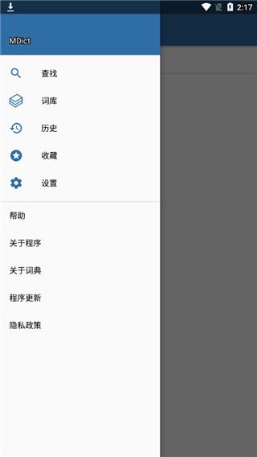

MDict 问答速查：从入门到精通的 8 个必问
整理一篇关于 MDict 的快问快答——这款老牌词典客户端到底好用在哪？怎么装、怎么导词库、怎么避坑，全在这里。
整理一篇关于 MDict 的快问快答——这款跨平台词典客户端到底好不好用？下面是八个真会遇到的问题，答完你就知道要不要装。
MDict 到底是什么？跟手机自带词典有啥区别？
MDict 是一款跨平台的本地词典客户端（它的官网上有各平台版本说明和更新记录），支持 Windows、Android、iOS、macOS 四个平台。核心能力只有一个：把 .mdx 和 .mdd 格式的词典文件装进手机/电脑，随时查。
跟系统自带词典的区别在于——系统词典是封闭的，你只能用它预置的那几本；MDict 是开放的，网上能找到的牛津高阶、朗文当代、韦氏、甚至各种专业词典（医学、法律、计算机），只要是 mdx 格式，统统能装进去。一个 MDict 里装二十本词典查起来不卡，这是系统词典做不到的。
谁真的需要装 MDict？
三类人最实用：一是英语/多语言学习者，需要同时查好几本词典交叉印证；二是专业领域从业者，比如医生、程序员、法律人，有行业词典要随时翻；三是词典爱好者，喜欢收集各种 mdx 词典，享受折腾的乐趣。
如果你只用系统自带词典查个单词，那 MDict 对你来说太重了。但只要你有过「系统词典不够用」的念头，就值得装一次试试。
怎么装？各平台有啥讲究？
Windows 版最简单——从官方下载拿安装包，双击一路下一步就好，默认路径是 C:\Program Files\MDict\。装完后第一次打开会让你选词典目录，直接跳下一步，词典文件稍后自己放。
Android 版装完后记得给存储权限，不然它扫不到你放进手机里的词典文件。Android 11 之后的分区存储机制下，词典文件推荐统一放在 /sdcard/mdict/doc/ 这个固定路径，省得每次手动加目录。
iOS 版是 App Store 免费版，但有个老问题——长期不更新，部分 iOS 16/17/18 用户反馈 Extension 加载慢、偶发崩溃。如果你用的是较新的 iPhone，装之前要有心理准备。iPad 体验会比 iPhone 好，支持分栏和多窗口并行。
词典文件怎么放进去才认？
这是新手最容易踩坑的一步。核心原则只有一个：文件名必须对得上。
一套完整的词典通常包含两部分：.mdx 是词典正文（必需），.mdd 是发音和图片素材包（可选）。这两个文件的主文件名必须完全一致——比如你有一本 牛津高阶.mdx，那 mdd 就得叫 牛津高阶.mdd，不能写成 Oxford.mdd 或 牛津高阶完整版.mdd，差一个字 MDict 就找不到关联。mdd 分卷格式（.1.mdd、.2.mdd）同理，前缀必须跟 mdx 完全匹配。
Windows 版支持两种导入方式：菜单里 Library → Library Manager → Add Directory 选文件夹，或者直接把 mdx 文件拖进窗口。Android 版放对路径后打开 App 会自动扫描。iOS 版通过文件共享或 AirDrop 把文件送到 MDict 沙盒目录就行。
装进去之后怎么用才顺？
最有用的三个功能，按优先级说：
词条内点击跳查——查一个词时，释义里出现的生词直接点一下就能跳过去查，全程不打断阅读流。这个"查词链"可以无限延伸，MDict 会记录你走过的每一步，随时能返回上一层。Windows 版默认开启（双击跳转），Android 版 v2.2 之后默认关闭了，要手动去侧栏菜单 → 设置 → 控制里打开。
多词典同时查——MDict 支持在搜索框里输入一个词，同时在所有已装词典里搜，结果按词典分开展示。查完牛津想确认朗文的释义，不用切换词典，直接往下翻就行。
悬浮窗/Action Extension——Android 版可以开悬浮窗，任何 App 里选中单词都能直接弹 MDict 结果；iOS 版走 Action Extension（分享菜单里选 MDict），但 Extension 有内存上限（约 50MB），一次别选太长的文本。
想自己做一本词典？难不难？
不难，入门用 mtxt 格式就行——完整的格式规范和编译技巧可以在mdict文档里翻到。mtxt 是纯文本，每条词条用一个制表符分隔标题和正文，任何文本编辑器都能写。正文里支持 *加粗*、_斜体_、- 列表 这些基础标记，编译成 mdx 后就能在 MDict 里查。
带图片或发音也简单——在正文里写 @apple.png，把图片和 mtxt 放同一目录，MDXBuilder 编译时会自动把资源打包进 mdd。资源文件不存在会直接报错，所以引用前先检查。
复杂排版（自定义 CSS、表格、嵌入）就要用 HTML + CSS 格式了，学习门槛高一些，但排版自由度也大。新手从 mtxt 起步，批量处理也方便——Python 几行代码就能把 CSV 或 Excel 的词条转成 mtxt。

iOS 用户特别关心：取词为啥经常坏？
iOS 的限制是系统硬约束，不是 MDict 的 Bug。MDict 在 iOS 上有两种取词方式，各有各的坑：
Action Extension（分享菜单方式） 是主力。常见问题：分享面板里找不到 MDict——向右滑最下排操作图标，点"更多"找到 MDict 开关打开；选了 MDict 但半屏窗空白——大概率是主 App 里没装词典，或者一次选了太长文本被系统杀掉；查词结果不完整——Extension 只能查主 App 里已经加载并缓存的词典，杀进程重启后要重新打开一遍所有词典。
三指轻触（系统级定义功能） 查的是 iOS 自带词典（牛津英汉、韦氏），不查你自己装的 mdx 词典。想查自定义词典只能用分享菜单 → MDict。
iOS 16 之后系统 API 变化比较大，MDict App Store 版本长期不更新，Extension 稳定性确实不如 Android 和 PC。如果折腾太久，可以试试同类型的 DictTango，Extension 实现更现代。
有啥容易踩的坑？
总结四个高频：
- mdd 文件名对不上 mdx——90% 的"词典扫不出来"都是这个原因。别小看文件名里多一个空格、多一个括号这种事，MDict 严格匹配。
- Android 存储权限没开——装完 App 第一次打开就弹窗要权限，别手滑点拒绝。拒绝了之后要去系统设置里手动开，路径藏得深。
- iOS Extension 词典没预热——杀进程重启后 Extension 里查不到词，主 App 里每本词典点开一次让它加载完就行。
- mtxt 保存带了 BOM——mtxt 文件必须 UTF-8 无 BOM，带 BOM 会导致编译失败。用 VS Code 或 Notepad++ 保存时注意编码选项。
值不值得长期用？
值得。MDict 二十年了，跨平台、轻量、不联网、本地查，没有弹窗广告、没有会员订阅、没有强制更新。只要你有装 mdx 词典的需求，它就是目前最稳的选择。iOS 用户可能会被 Extension 的稳定性劝退，但其他平台几乎找不到更好的替代品。关于 mtxt 格式和词典制作的一些参考资料，我分别传到了 GitHub、Gitee、GitCode 三个仓库，方便按需查阅。